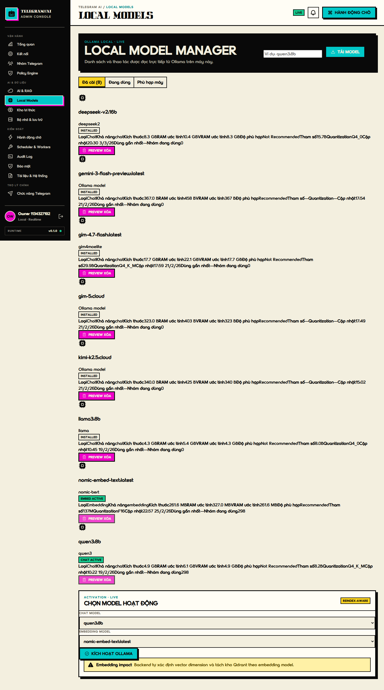

Tách metadata thành lưới key/value để owner nhận diện capability, RAM, VRAM và model active trong vài giây.
UX/UI AUDIT · IMPLEMENTATION PROPOSAL
5 sửa đổi ưu tiên trước release.
Mỗi đề xuất bên dưới ghép bằng chứng “Before” từ audit với một “After” HTML có thể thao tác, kèm lý do và tiêu chí nghiệm thu.
TRẠNG THÁI AUDIT
NOT READY
6 P1 · prototype tập trung 5 nhóm sửa đổi
PRIORITY QUEUE
Danh sách ưu tiên

- Không có text dính nhau ở 1440 và 360 px.
- Card không tạo page overflow.
- Model selector chỉ cho phép đúng capability.
OLLAMA LOCAL · RESPONSIVE INVENTORY
Local Model Manager
Metadata có cấu trúc, active state rõ ràng và lựa chọn model theo capability.
ACTIVATION · CAPABILITY SAFE
Chọn model hoạt động
Embedding hiện tại: 298 nguồn · 75.226 vector. Thay embedding luôn cần preview re-index.
CHAT · TOOL-USE
qwen3:8b
Context 32K · tool-use có kiểm soát · đang được 298 nguồn sử dụng.
EMBEDDING · 768 DIMENSIONS
nomic-embed-text
Đang lập chỉ mục cho 75.226 vector · thay đổi sẽ tạo re-index preview.
CHAT
llama3:8b
Chưa active · phù hợp làm chat fallback trên máy hiện tại.
OLLAMA DOWNLOAD
qwen3:14b
Đã tải 3,8 / 8,1 GB
47%
LEARNING INVENTORY · RESPONSIVE
Kho tri thức
Desktop dùng bảng đầy đủ; tablet giảm cột; mobile chuyển sang card mở rộng.
UNIFIED TELEGRAM BRAIN
Nguồn đang đóng góp
| Chọn | Nguồn | Trạng thái | MySQL | Vector | Dung lượng | Lần học | Lỗi / ghi chú | Thao tác |
|---|
Không có nguồn phù hợp
Thử xóa bộ lọc hoặc tìm bằng Chat ID đầy đủ.
BACKGROUND JOBS · CONTRACT DEMO
Learning Jobs
Status, phase và progress được tách rõ; không tạo phần trăm giả khi backend không trả dữ liệu đáng tin cậy.
JOB 1261066B-0141-4782-620E-66525F2A8529
Upside — Telegram group sync
- Phase
- Chờ worker
- Tin đã sync
- 0 / 12.840
- Vector
- 0
- Thời lượng
- Chưa bắt đầu
- Lỗi gần nhất
- Không có
FRONTEND DISPLAY CONTRACT
Quy tắc tiến độ
| Status / phase | Progress | Hiển thị |
|---|---|---|
| Queued | 0% | Chưa xử lý, không giả hoạt động. |
| Syncing | 1–50% | Tỷ lệ tin Telegram đã đồng bộ. |
| Embedding | 51–99% | Tỷ lệ vector đã tạo. |
| Completed | 100% | Không bao giờ hiển thị Completed · 0%. |
| Failed / Paused | Giữ nguyên | Giữ mốc hợp lệ cuối cùng. |
| Unknown | Không hiển thị | Ghi rõ thiếu dữ liệu tiến độ. |
SSE HEALTH · STATE MACHINE
Trạng thái kết nối
Chỉ hiển thị LIVE khi SSE đã kết nối; dữ liệu cũ luôn có timestamp và cảnh báo stale.
ADMIN API + SSE
Đang nhận dữ liệu realtime
SSE đã xác nhận kết nối. Snapshot mới có thể cập nhật các chỉ số vận hành.
Dữ liệu trên màn hình có thể đã cũ. Hành động ghi tạm khóa cho đến khi kết nối
ổn định.
DISPLAY LOGIC
Điều kiện hiển thị
- ConnectingChưa có nhãn LIVE, khóa dữ liệu realtime.
- LiveChỉ đạt khi EventSource báo open.
- ReconnectingGiữ snapshot cũ, hiện thời gian cập nhật cuối.
- OfflineDừng retry nhanh, cho phép retry thủ công.
- Session expiredKhông retry SSE; điều hướng đăng nhập.
RESPONSIVE DIALOG · KEYBOARD SAFE
Modal an toàn tại 360 px
Có viewport margin, header/footer cố định, content cuộn nội bộ, focus trap và ESC.
INTERACTION TEST
Mở modal mẫu
Xác nhận thay model
Modal ngắn ở giữa màn hình, CTA luôn nhìn thấy.
Tài liệu hệ thống
Modal dài dùng scroll nội bộ và thành full-screen trên mobile.
Kiểm tra:
Tab / Shift+Tab giữ focus trong modal · ESC đóng · focus trở về nút vừa mở.